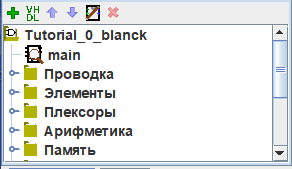
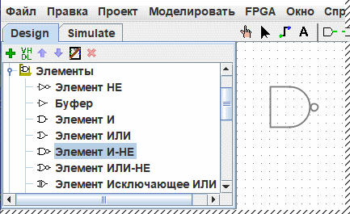
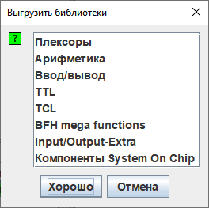

Навигатор

Навигатор выполняет две основные функции в зависимости от текущего режима работы. В режиме моделирования и отладки он отображает иерархическую структуру моделирования проекта. В режиме проектирования (как показано на иллюстрации) Навигатор выводит древовидный список подсхем текущего проекта (в верхней секции) и полный перечень подключённых библиотек компонентов (в нижней секции). Вложенные папки представляют собой упорядоченные наборы логических блоков и компонентов.
В среде Logisim-evolution все доступные компоненты распределены по функциональным библиотекам. Чтобы развернуть перечень элементов внутри конкретной библиотеки, дважды щёлкните по соответствующей папке левой кнопкой мыши или нажмите на стрелку индикатора слева от неё.

На рисунке выше развёрнута библиотека Элементы и выбран логический вентиль 2И-НЕ. Среда готова к непосредственному размещению выбранного элемента на холсте схемы. Обратите внимание, что базовые сложные функции (например, логический элемент Исключающее ИЛИ) уже встроены в состав стандартных библиотек и не требуют ручной сборки на дискретных вентилях.
Стандартный набор библиотек проекта
При создании нового файла проекта Logisim-evolution автоматически подключает следующий базовый набор конфигурационных библиотек:
- Монтаж — коммутационные элементы, взаимодействующие непосредственно с проводниками: контактные выводы (пины), разветвители, тактовые генераторы, туннели и шины питания.
- Элементы — базовые логические вентили, реализующие элементарные функции булевой алгебры (И, ИЛИ, НЕ, И-НЕ, ИЛИ-НЕ, ИСКЛ-ИЛИ и др.).
- Коммутаторы — комбинационные узлы средней степени интеграции: мультиплексоры, дешифраторы, шифраторы, демультиплексоры и коммутационные матрицы.
- Арифметика — цифровые блоки, выполняющие математические операции: сумматоры, вычитатели, компараторы, умножители, делители и сдвигатели.
- Память — последовательностные устройства и блоки хранения данных: синхронные и асинхронные триггеры, многоразрядные регистры, счётчики, сдвиговые регистры, а также модули ОЗУ и ПЗУ.
- Ввод-вывод — интерактивные компоненты интерфейса: светодиоды, кнопки, матрицы, семисегментные и текстовые индикаторы.
- ТТЛ — цифровые микросхемы широкого применения транзисторно-транзисторной логики серии 74xx в стандартных корпусах DIP.
- TCL — специализированные программные интерфейсы для интеграции схем со скриптами автоматизации на языке TCL/TK.
- HDL-IP — программные модули для интеграции в проект внешних аппаратно-описываемых IP-ядер (VHDL).
- BFH мега-функции — библиотека усложнённых параметризируемых блоков, ориентированных на архитектуру плат BFH.
- Дополнительный ввод/вывод — расширенная периферия: пьезоэлектрические зуммеры, ползунковые потенциометры, цифровые осциллографы, джойстики и матрицы датчиков.
- Система на кристалле (SoC) — компоненты для сквозного проектирования и встраивания в ПЛИС: процессоры, системные шины, отладчики и контроллеры статической памяти.
Управление библиотеками проекта
Пользователь имеет возможность динамически расширять состав используемых элементов через пункты главного меню | Проект | → | Загрузить библиотеку |. Логика Logisim-evolution разделяет подключаемые библиотеки на три независимых типа:
- Встроенные библиотеки — штатные наборы компонентов, поставляемые непосредственно в дистрибутиве Logisim-evolution. Подробное описание функционирования каждого элемента приведено в «Справке по библиотеке».
- Библиотеки Logisim — сторонние файлы проектов Logisim (.circ), сохранённые на внешнем носителе. Вы можете разработать и верифицировать собственный сложный узел в отдельном файле (подробнее см. раздел «Подсхемы»), а затем импортировать его в качестве готовой функциональной библиотеки в новые проекты.
-
Библиотеки JAR — скомпилированные программные модули, написанные на языке Java и упакованные в архивы формата JAR. Данный метод применяется для создания нестандартных высокоинтерактивных элементов с уникальной логикой и сложной анимацией GUI (подробнее см. раздел «Библиотеки JAR»).
Примечание: Отдельные JAR-архивы при импорте требуют ручного указания полного пути к главному исполняемому Java-классу (class name), который должен быть предоставлен разработчиком данного плагина.
Для выгрузки ненужных модулей перейдите в меню | Проект | → | Отключить библиотеки... |. Система контроля проекта заблокирует операцию и выдаст предупреждение, если компоненты из удаляемой библиотеки уже физически размещены на текущем холсте, закреплены на панели быстрого доступа или привязаны к функциональным кнопкам мыши.

Далее: Панель инструментов.